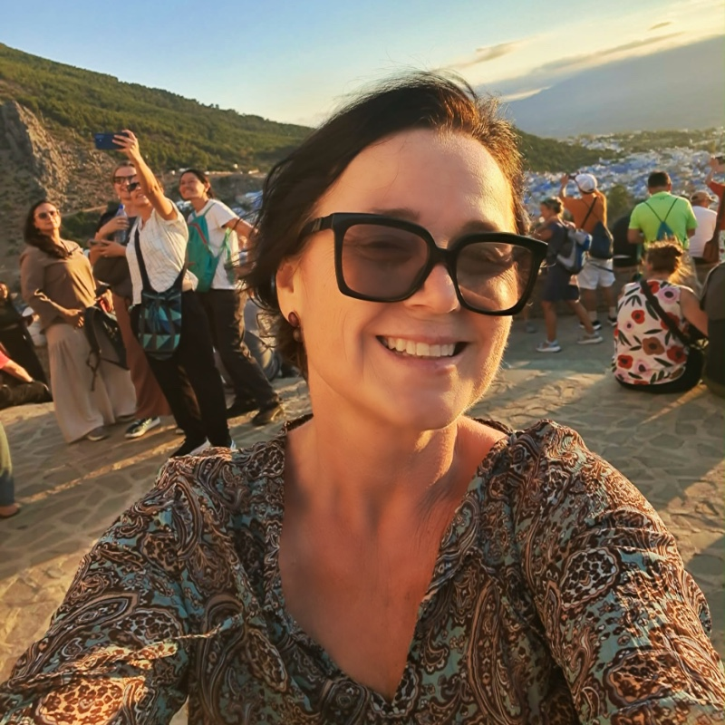

Španělsku se věnuji už od roku 1990 – profesně i osobně. Ačkoliv jsem se narodila v Čechách, Španělsko dnes považuji za svůj druhý domov.

Většinu času trávím právě tam: žila jsem na různých místech, procestovala jsem prakticky celé Španělsko a poznala ho nejen jako turistka, ale hlavně jako člověk, který tam skutečně žije a funguje.
Jsem držitelkou oficiálního certifikátu pro průvodcování ve Španělsku: provázím jednotlivce i skupiny a spolupracuji s českými i zahraničními cestovními kancelářemi. Znám velmi dobře celé Španělsko, včetně Baleárských a Kanárských ostrovů, a také Latinskou Ameriku.
Vedle průvodcovství pracuji dlouhá léta jako překladatelka a tlumočnice se zaměřením především na španělštinu. Tlumočím obchodní jednání, pracovní schůzky, odborné akce i technická jednání.
Pracovala jsem také jako marketing manager ve španělské společnosti KAIKU v Barceloně, kde jsem zodpovídala za uvedení nových produktů na trh v Katalánsku. Díky této zkušenosti dobře rozumím firemnímu prostředí, obchodní komunikaci i rozdílům mezi českým a španělským způsobem jednání.
Během let jsem si ve Španělsku vybudovala širokou síť osobních kontaktů, především v oblasti cestovního ruchu, ale i v dalších oborech. Díky nim mám přístup k informacím a možnostem, které běžný návštěvník nebo nově příchozí nemá.
Své znalosti a zkušenosti neustále doplňuji. Španělsko, Barcelona a prostředí kolem nich jsou pro mě dlouhodobě zásadním tématem. Každý den sleduji aktuální dění, vyhledávám nové informace a při svých cestách získávám další zkušenosti a kontakty.
Kromě španělštiny a katalánštiny překládám a tlumočím také bulharštinu. Znám velmi dobře bulharské reálie, mentalitu i prostředí. Mluvím také anglicky a německy; domluvím se francouzsky, polsky, rusky a italsky.
Procestovala jsem celou Evropu, velkou část Latinské Ameriky, Blízký východ, jihovýchodní Asii i další místa světa.
Vystudovala jsem Vysokou školu ekonomickou v Praze a španělskou filologii na Filozofické fakultě Univerzity Karlovy. Během svého pobytu v Barceloně jsem studovala také žurnalistiku na Universitat Autònoma de Barcelona.
To, co nabízím, proto není statický soubor informací, ale živý, průběžně aktualizovaný pohled založený na dlouholeté praxi i současné realitě.
Během let strávených ve Španělsku jsem si prošla vším:
- vyřizováním dokumentů,
- hledáním bydlení,
- španělskou byrokracií,
- i budováním života v cizí zemi.
Znám místní mentalitu, úřady i věci, které člověk zjistí až ve chvíli, kdy ve Španělsku opravdu začne žít.
Můj e-book nevznikl z googlování ani ho nenapsala AI. Vznikl z reálných zkušeností, tisíců kilometrů po Španělsku a spousty let práce s lidmi, kteří potřebovali praktické informace, jasné odpovědi a někoho, kdo jim pomůže zorientovat se v realitě běžného života.
Prošla jsem stovky webů expatů, oficiálních autorit i mnoha různých institucí, videí na YouTube, pročetla spoustu recenzí, abych nakonec sestavila manuál, který je praktický, přehledný a hlavně 100 procent použitelný pro různé životní situace.
Dnes pomáhám lidem, kteří se chtějí do Španělska přestěhovat, pracovat tam, podnikat, studovat nebo si tam jednoduše vybudovat nový život bez zbytečných chyb, stresu a chaosu.
Můj příběh
Narodila jsem se v českých Sudetech za komunismu. Jsem „Husákovo dítě“.
Svět byl tehdy daleko a možnosti omezené, ale měla jsem obrovskou touhu poznat něco víc než jen prostředí, ve kterém jsem vyrůstala. Touhu vidět svět, poznat jiné lidi, jiné kultury, jiné způsoby života.
Jako dítě jsem se učila německy, protože jsem vyrůstala v pohraničí. Na střední škole přišla španělština – učil nás ji ruštinář, který se ji naučil v hospodě od Kubánců. Nebyla to kdovíjaká výuka, ale mě se ten jazyk okamžitě zalíbil. Zněl jinak, svobodně, exoticky.
Po roce 1989 se otevřely hranice a já jsem cítila, že přišla moje šance. V roce 1990 jsem nastoupila na Vysokou školu ekonomickou v Praze a zároveň jsem se rozhodla udělat průvodcovské jazykové zkoušky ze španělštiny. Jediný možný termín byl za tři týdny. Zavřela jsem se tehdy na koleji, zásobila se základními potravinami a tři týdny jsem nevyšla ven. Naučila jsem se skoro nazpaměť dvěstěstránková skripta – taková byla moje touha něco umět a moci „vyjet ven“. Zkoušky jsem udělala na výbornou – a tím začala moje cesta.
Bez internetu, bez GPS a bez zkušeností jsem začala provázet první skupiny. Bylo mi devatenáct. Když jsme přijeli v noci do neznámého města, nechala jsem skupinu spát a sama jsem chodila ulicemi, abych si ráno byla jistá trasou. Byla to tvrdá škola, ale naučila mě samostatnosti, improvizaci a práci s lidmi.
Poprvé jsem přijela do Španělska v létě 1990. Okamžitě jsem věděla, že tam jednou budu žít. Ten pocit byl velmi silný. Během studií jsem pracovala jako průvodkyně a delegátka a postupně poznávala zemi zevnitř.
Po studiích jsem se rozhodla odejít do Španělska natrvalo. Nebylo to jednoduché – Česká republika tehdy nebyla v Evropské unii a legální pobyt znamenal spoustu byrokracie. Hledala jsem možnosti, jak se v zemi usadit, sháněla práci a vyřizovala dokumenty. Čekala jsem ve frontách před úřady od časného rána, pracovala načerno jako hosteska na veletrzích, nabízela výrobky v supermarketech a postupně si budovala zázemí.
Současně jsem intenzivně pracovala na jazyce. Četla jsem denně noviny, zapisovala si neznámá slovíčka, sledovala televizi, mluvila s lidmi. Postupně jsem se dostala na úroveň, kdy jsem španělštinu používala stejně přirozeně jako rodilí mluvčí. Naučila jsem se i katalánštinu a studovala jsem žurnalistiku na barcelonské univerzitě.
Ve Španělsku jsem žila dvanáct let. Pracovala jsem v různých oborech, mimo jiné jako marketing manager ve španělské firmě, a současně jsem dál provázela turisty. Stala jsem se součástí místní komunity, mám přátele mezi Katalánci i lidmi z Latinské Ameriky a poznávala každodenní život zevnitř.
Po návratu do Česka jsem se ke Španělsku nepřestala vracet. Dodnes tam trávím většinu svého času: jako průvodkyně, překladatelka, tlumočnice a „spojka“ pro lidi, kteří z jakéhokoliv důvodu potřebují pomoci pochopit a uchopit španělskou realitu:
- turisté,
- cestovatelé,
- zájemci o koupi nemovitosti,
- studenti chystající se na Erasmus nebo vlastní studijní život ve Španělsku,
- firmy české i španělské hledající kontakty v té druhé zemi,
- podnikatelé,
- i důchodci, kteří sní o pohodovém životě pod španělským sluncem.
Těm všem dokážu pomoci a pomáhám. Baví mě to.
Spain is different. To jsem už dávno pochopila a také vím, že bez tohoto pochopení nemá moc smysl o životě ve Španělsku uvažovat. Když ale pochopíte, o čem Španělsko opravdu je, otevře se před vámi neskutečně pestrá cesta. Slunečná, pohodová, usměvavá a pořád ještě hodně svobodná. Jsem tu, abych ji ukázala i vám.